OREGO Work-Precision Diagrams
using OrdinaryDiffEq, DiffEqDevTools, ParameterizedFunctions, Plots, ODE, ODEInterfaceDiffEq, LSODA, Sundials
gr() #gr(fmt=:png)
using LinearAlgebra, StaticArrays
f = @ode_def Orego begin
dy1 = p1*(y2+y1*(1-p2*y1-y2))
dy2 = (y3-(1+y1)*y2)/p1
dy3 = p3*(y1-y3)
end p1 p2 p3
p = SA[77.27,8.375e-6,0.161]
prob = ODEProblem{true, SciMLBase.FullSpecialize}(f,[1.0,2.0,3.0],(0.0,30.0),p)
probstatic = ODEProblem{false}(f,SA[1.0,2.0,3.0],(0.0,30.0),p)
sol = solve(prob,CVODE_BDF(),abstol=1/10^14,reltol=1/10^14)
sol2 = solve(probstatic,Rodas5P(),abstol=1/10^14,reltol=1/10^14)
probs = [prob,probstatic]
test_sol = [sol,sol2];
abstols = 1.0 ./ 10.0 .^ (4:11)
reltols = 1.0 ./ 10.0 .^ (1:8);plot_prob = ODEProblem(f,[1.0,2.0,3.0],(0.0,400.0),p)
sol = solve(plot_prob,CVODE_BDF())
plot(sol,yscale=:log10)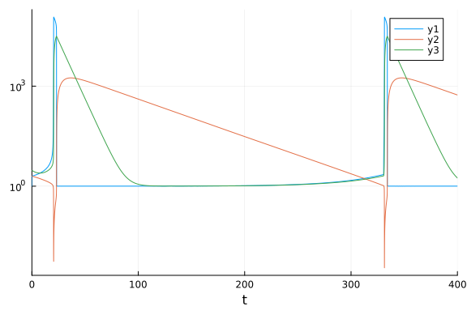
Omissions and Tweaking
The following were omitted from the tests due to convergence failures. ODE.jl's adaptivity is not able to stabilize its algorithms, while GeometricIntegratorsDiffEq has not upgraded to Julia 1.0. GeometricIntegrators.jl's methods used to be either fail to converge at comparable dts (or on some computers errors due to type conversions).
#sol = solve(prob,ode23s()); println("Total ODE.jl steps: $(length(sol))")
#using GeometricIntegratorsDiffEq
#try
# sol = solve(prob,GIRadIIA3(),dt=1/10)
#catch e
# println(e)
#endsol = solve(prob,ARKODE(),abstol=1e-5,reltol=1e-1);sol = solve(prob,ARKODE(nonlinear_convergence_coefficient = 1e-3),abstol=1e-5,reltol=1e-1);sol = solve(prob,ARKODE(order=3),abstol=1e-5,reltol=1e-1);sol = solve(prob,ARKODE(order=3,nonlinear_convergence_coefficient = 1e-5),abstol=1e-5,reltol=1e-1);sol = solve(prob,ARKODE(order=5),abstol=1e-5,reltol=1e-1);The stabilized explicit methods are not stable enough to handle this problem well. While they don't diverge, they are really slow.
setups = [
#Dict(:alg=>ROCK2()) #Unstable
#Dict(:alg=>ROCK4()) #needs more iterations
#Dict(:alg=>ESERK5()),
]Any[]The EPIRK and exponential methods also fail:
sol = solve(prob,EXPRB53s3(),dt=2.0^(-8));
sol = solve(prob,EPIRK4s3B(),dt=2.0^(-8));
sol = solve(prob,EPIRK5P2(),dt=2.0^(-8));PDIRK44 also fails
sol = solve(prob,PDIRK44(),dt=2.0^(-8));High Tolerances
This is the speed when you just want the answer.
abstols = 1.0 ./ 10.0 .^ (5:8)
reltols = 1.0 ./ 10.0 .^ (1:4);
setups = [Dict(:alg=>Rosenbrock23()),
Dict(:alg=>Rosenbrock23(), :prob_choice => 2),
Dict(:alg=>FBDF()),
Dict(:alg=>QNDF()),
Dict(:alg=>TRBDF2()),
Dict(:alg=>CVODE_BDF()),
Dict(:alg=>rodas()),
Dict(:alg=>radau()),
Dict(:alg=>RadauIIA5()),
Dict(:alg=>ROS34PW1a()),
Dict(:alg=>lsoda()),
]
wp = WorkPrecisionSet(probs,abstols,reltols,setups;
save_everystep=false,appxsol=test_sol,maxiters=Int(1e5),numruns=10)
plot(wp)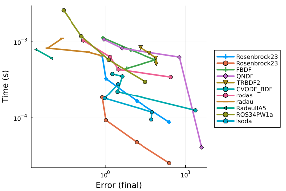
wp = WorkPrecisionSet(probs,abstols,reltols,setups;dense = false,verbose=false,
appxsol=test_sol,maxiters=Int(1e5),error_estimate=:l2,numruns=10)
plot(wp)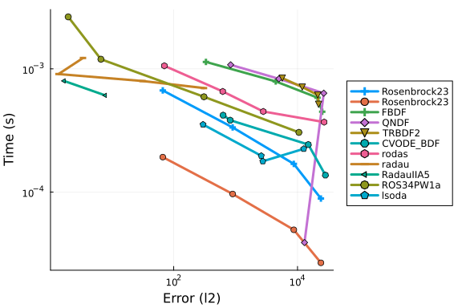
wp = WorkPrecisionSet(probs,abstols,reltols,setups;
appxsol=test_sol,maxiters=Int(1e5),error_estimate=:L2,numruns=10)
plot(wp)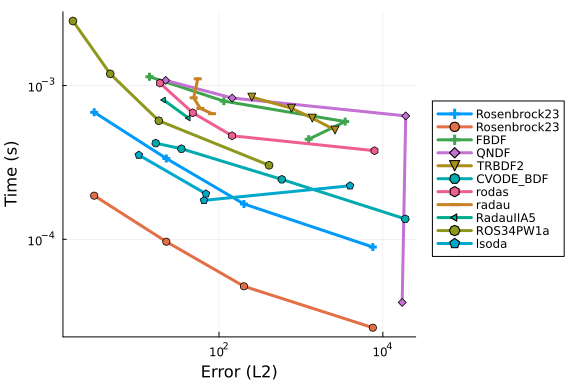
setups = [Dict(:alg=>Rosenbrock23()),
Dict(:alg=>Rosenbrock23(), :prob_choice => 2),
Dict(:alg=>Kvaerno3()),
Dict(:alg=>CVODE_BDF()),
Dict(:alg=>KenCarp4()),
Dict(:alg=>TRBDF2()),
Dict(:alg=>KenCarp3()),
Dict(:alg=>lsoda()),
# Dict(:alg=>SDIRK2()), # Removed because it's bad
Dict(:alg=>radau())]
wp = WorkPrecisionSet(probs,abstols,reltols,setups;
save_everystep=false,appxsol=test_sol,maxiters=Int(1e5),numruns=10)
plot(wp)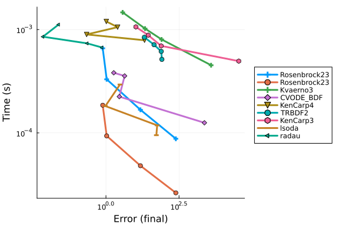
wp = WorkPrecisionSet(probs,abstols,reltols,setups;dense = false,verbose = false,
appxsol=test_sol,maxiters=Int(1e5),error_estimate=:l2,numruns=10)
plot(wp)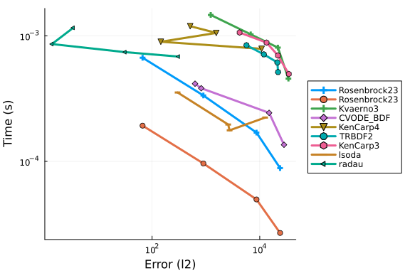
wp = WorkPrecisionSet(probs,abstols,reltols,setups;
appxsol=test_sol,maxiters=Int(1e5),error_estimate=:L2,numruns=10)
plot(wp)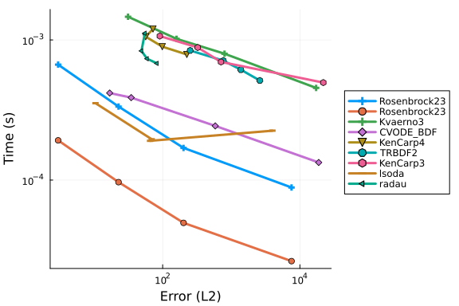
setups = [Dict(:alg=>Rosenbrock23()),
Dict(:alg=>Rosenbrock23(), :prob_choice => 2),
Dict(:alg=>KenCarp5()),
Dict(:alg=>KenCarp4()),
Dict(:alg=>KenCarp4(), :prob_choice => 2),
Dict(:alg=>KenCarp3()),
Dict(:alg=>ARKODE(order=5)),
Dict(:alg=>ARKODE(nonlinear_convergence_coefficient = 1e-6)),
Dict(:alg=>ARKODE(nonlinear_convergence_coefficient = 1e-5,order=3))
]
names = ["Rosenbrock23" "Rosenbrock23 Static" "KenCarp5" "KenCarp4" "KenCarp4 Static" "KenCarp3" "ARKODE5" "ARKODE4" "ARKODE3"]
wp = WorkPrecisionSet(probs,abstols,reltols,setups;
names=names,
save_everystep=false,appxsol=test_sol,maxiters=Int(1e5),numruns=10)
plot(wp)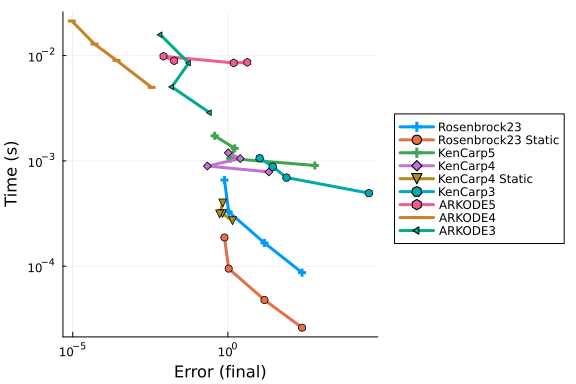
Low Tolerances
This is the speed at lower tolerances, measuring what's good when accuracy is needed.
abstols = 1.0 ./ 10.0 .^ (7:13)
reltols = 1.0 ./ 10.0 .^ (4:10)
setups = [
Dict(:alg=>FBDF()),
Dict(:alg=>QNDF()),
Dict(:alg=>Rodas4P()),
Dict(:alg=>CVODE_BDF()),
Dict(:alg=>ddebdf()),
Dict(:alg=>Rodas4()),
Dict(:alg=>Rodas4(), :prob_choice => 2),
Dict(:alg=>Rodas5P()),
Dict(:alg=>Rodas5P(), :prob_choice => 2),
Dict(:alg=>rodas()),
Dict(:alg=>radau()),
Dict(:alg=>RadauIIA5()),
Dict(:alg=>lsoda()),
]
wp = WorkPrecisionSet(probs,abstols,reltols,setups;
save_everystep=false,appxsol=test_sol,maxiters=Int(1e5),numruns=10)
plot(wp)
wp = WorkPrecisionSet(probs,abstols,reltols,setups;verbose=false,
dense=false,appxsol=test_sol,maxiters=Int(1e5),error_estimate=:l2,numruns=10)
plot(wp)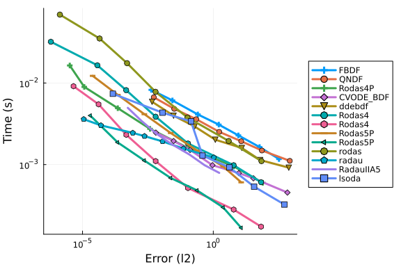
wp = WorkPrecisionSet(probs,abstols,reltols,setups;
appxsol=test_sol,maxiters=Int(1e5),error_estimate=:L2,numruns=10)
plot(wp)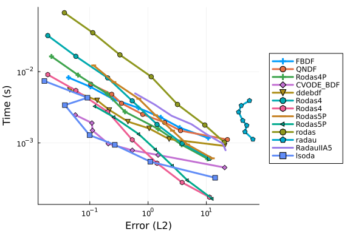
setups = [Dict(:alg=>GRK4A()),
Dict(:alg=>Rodas5()),
Dict(:alg=>Rodas5P()),
Dict(:alg=>Rodas5P(), :prob_choice => 2),
Dict(:alg=>Kvaerno5()),
Dict(:alg=>CVODE_BDF()),
Dict(:alg=>KenCarp4()),
Dict(:alg=>KenCarp4(), :prob_choice => 2),
Dict(:alg=>KenCarp5()),
Dict(:alg=>Rodas4()),
Dict(:alg=>Rodas4(), :prob_choice => 2),
Dict(:alg=>lsoda()),
Dict(:alg=>radau()),
Dict(:alg=>ImplicitEulerExtrapolation()),
Dict(:alg=>ImplicitEulerBarycentricExtrapolation()),
Dict(:alg=>ImplicitHairerWannerExtrapolation()),
]
wp = WorkPrecisionSet(probs,abstols,reltols,setups;
save_everystep=false,appxsol=test_sol,maxiters=Int(1e5),numruns=10)
plot(wp)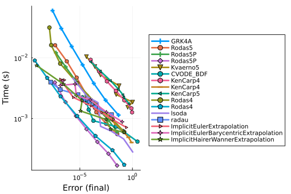
wp = WorkPrecisionSet(probs,abstols,reltols,setups;verbose=false,
dense=false,appxsol=test_sol,maxiters=Int(1e5),error_estimate=:l2,numruns=10)
plot(wp)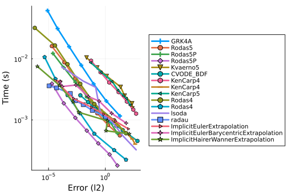
wp = WorkPrecisionSet(probs,abstols,reltols,setups;
appxsol=test_sol,maxiters=Int(1e5),error_estimate=:L2,numruns=10)
plot(wp)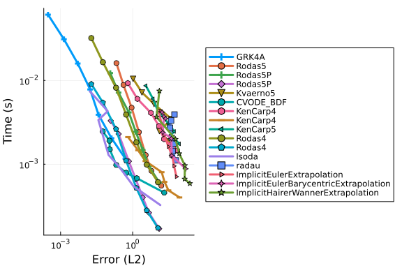
The following algorithms were removed since they failed.
#setups = [Dict(:alg=>Hairer4()),
#Dict(:alg=>Hairer42()),
#Dict(:alg=>Rodas3()),
#Dict(:alg=>Kvaerno4()),
#Dict(:alg=>Cash4())
#]
#wp = WorkPrecisionSet(probs,abstols,reltols,setups;
# save_everystep=false,appxsol=test_sol,maxiters=Int(1e5),numruns=10)
#plot(wp)Multithreading benchmarks with Parallel Extrapolation Methods
#Checking for threading
print(Threads.nthreads())128#Setting BLAS to one thread to measure gains
LinearAlgebra.BLAS.set_num_threads(1)
abstols = 1.0 ./ 10.0 .^ (10:12)
reltols = 1.0 ./ 10.0 .^ (7:9)
setups = [
Dict(:alg=>CVODE_BDF()),
Dict(:alg=>KenCarp4()),
Dict(:alg=>Rodas4()),
Dict(:alg=>Rodas4(), :prob_choice => 2),
Dict(:alg=>Rodas5P()),
Dict(:alg=>Rodas5P(), :prob_choice => 2),
Dict(:alg=>QNDF()),
Dict(:alg=>lsoda()),
Dict(:alg=>radau()),
Dict(:alg=>seulex()),
Dict(:alg=>ImplicitEulerExtrapolation(init_order = 4,threading = OrdinaryDiffEq.PolyesterThreads())),
Dict(:alg=>ImplicitEulerExtrapolation(init_order = 4,threading = false)),
Dict(:alg=>ImplicitEulerBarycentricExtrapolation(init_order = 4, threading = OrdinaryDiffEq.PolyesterThreads())),
Dict(:alg=>ImplicitEulerBarycentricExtrapolation(init_order = 4, threading = false)),
Dict(:alg=>ImplicitHairerWannerExtrapolation(init_order = 5,threading = OrdinaryDiffEq.PolyesterThreads())),
Dict(:alg=>ImplicitHairerWannerExtrapolation(init_order = 5,threading = false)),
]
solnames = ["CVODE_BDF","KenCarp4","Rodas4","Rodas4 Static","Rodas%P","Rodas5P Static","QNDF","lsoda","radau","seulex","ImplEulerExtpl (threaded)", "ImplEulerExtpl (non-threaded)",
"ImplEulerBaryExtpl (threaded)","ImplEulerBaryExtpl (non-threaded)","ImplHWExtpl (threaded)","ImplHWExtpl (non-threaded)"]
wp = WorkPrecisionSet(probs,abstols,reltols,setups;
names = solnames,save_everystep=false,appxsol=test_sol,maxiters=Int(1e5),numruns=10)
plot(wp, title = "Implicit Methods: OREGO",legend=:outertopleft,size = (1000,500),
xticks = 10.0 .^ (-15:1:1),
yticks = 10.0 .^ (-6:0.3:5),
bottom_margin= 5Plots.mm)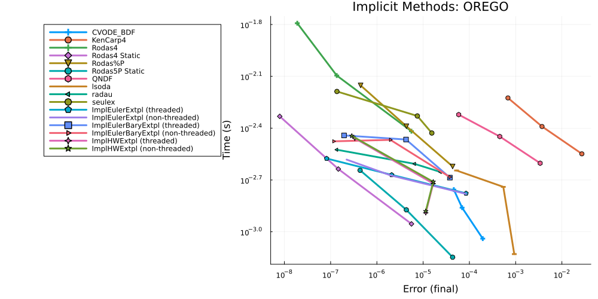
Conclusion
At high tolerances, Rosenbrock23 hits the the error estimates and is fast. At lower tolerances and normal user tolerances, Rodas4 and Rodas5 are extremely fast. When you get down to reltol=1e-9 radau begins to become as efficient as Rodas4, and it continues to do well below that.
Appendix
These benchmarks are a part of the SciMLBenchmarks.jl repository, found at: https://github.com/SciML/SciMLBenchmarks.jl. For more information on high-performance scientific machine learning, check out the SciML Open Source Software Organization https://sciml.ai.
To locally run this benchmark, do the following commands:
using SciMLBenchmarks
SciMLBenchmarks.weave_file("benchmarks/StiffODE","Orego.jmd")Computer Information:
Julia Version 1.9.3
Commit bed2cd540a1 (2023-08-24 14:43 UTC)
Build Info:
Official https://julialang.org/ release
Platform Info:
OS: Linux (x86_64-linux-gnu)
CPU: 128 × AMD EPYC 7502 32-Core Processor
WORD_SIZE: 64
LIBM: libopenlibm
LLVM: libLLVM-14.0.6 (ORCJIT, znver2)
Threads: 128 on 128 virtual cores
Environment:
JULIA_CPU_THREADS = 128
JULIA_DEPOT_PATH = /cache/julia-buildkite-plugin/depots/5b300254-1738-4989-ae0a-f4d2d937f953
JULIA_IMAGE_THREADS = 1
Package Information:
Status `/cache/build/exclusive-amdci3-0/julialang/scimlbenchmarks-dot-jl/benchmarks/StiffODE/Project.toml`
⌃ [2169fc97] AlgebraicMultigrid v0.5.1
[6e4b80f9] BenchmarkTools v1.3.2
⌃ [f3b72e0c] DiffEqDevTools v2.35.0
[5b8099bc] DomainSets v0.6.7
[5a33fad7] GeometricIntegratorsDiffEq v0.2.5
[40713840] IncompleteLU v0.2.1
⌃ [7f56f5a3] LSODA v0.7.4
⌃ [7ed4a6bd] LinearSolve v2.4.2
⌃ [94925ecb] MethodOfLines v0.9.5
⌃ [961ee093] ModelingToolkit v8.64.0
[c030b06c] ODE v2.15.0
⌃ [09606e27] ODEInterfaceDiffEq v3.13.2
⌃ [1dea7af3] OrdinaryDiffEq v6.53.4
⌃ [65888b18] ParameterizedFunctions v5.15.0
⌃ [91a5bcdd] Plots v1.38.17
[132c30aa] ProfileSVG v0.2.1
[31c91b34] SciMLBenchmarks v0.1.3
⌃ [90137ffa] StaticArrays v1.6.2
⌃ [c3572dad] Sundials v4.19.3
⌃ [0c5d862f] Symbolics v5.5.1
[a759f4b9] TimerOutputs v0.5.23
[37e2e46d] LinearAlgebra
[2f01184e] SparseArrays
Info Packages marked with ⌃ have new versions available and may be upgradable.
Warning The project dependencies or compat requirements have changed since the manifest was last resolved. It is recommended to `Pkg.resolve()` or consider `Pkg.update()` if necessary.And the full manifest:
Status `/cache/build/exclusive-amdci3-0/julialang/scimlbenchmarks-dot-jl/benchmarks/StiffODE/Manifest.toml`
⌅ [47edcb42] ADTypes v0.1.6
[a4c015fc] ANSIColoredPrinters v0.0.1
⌅ [c3fe647b] AbstractAlgebra v0.31.0
[621f4979] AbstractFFTs v1.5.0
⌅ [1520ce14] AbstractTrees v0.3.4
[79e6a3ab] Adapt v3.6.2
⌃ [2169fc97] AlgebraicMultigrid v0.5.1
⌅ [4c88cf16] Aqua v0.5.6
[ec485272] ArnoldiMethod v0.2.0
[4fba245c] ArrayInterface v7.4.11
[30b0a656] ArrayInterfaceCore v0.1.29
⌃ [4c555306] ArrayLayouts v1.1.1
[13072b0f] AxisAlgorithms v1.0.1
⌃ [aae01518] BandedMatrices v0.17.34
[6e4b80f9] BenchmarkTools v1.3.2
⌃ [e2ed5e7c] Bijections v0.1.4
[d1d4a3ce] BitFlags v0.1.7
[62783981] BitTwiddlingConvenienceFunctions v0.1.5
⌃ [8e7c35d0] BlockArrays v0.16.36
[fa961155] CEnum v0.4.2
⌃ [2a0fbf3d] CPUSummary v0.2.3
[00ebfdb7] CSTParser v3.3.6
[49dc2e85] Calculus v0.5.1
[d360d2e6] ChainRulesCore v1.16.0
[fb6a15b2] CloseOpenIntervals v0.1.12
[944b1d66] CodecZlib v0.7.2
⌃ [35d6a980] ColorSchemes v3.22.0
[3da002f7] ColorTypes v0.11.4
[c3611d14] ColorVectorSpace v0.10.0
[5ae59095] Colors v0.12.10
[861a8166] Combinatorics v1.0.2
[a80b9123] CommonMark v0.8.12
[38540f10] CommonSolve v0.2.4
[bbf7d656] CommonSubexpressions v0.3.0
⌃ [a09551c4] CompactBasisFunctions v0.2.8
⌃ [34da2185] Compat v4.8.0
[b152e2b5] CompositeTypes v0.1.3
[f0e56b4a] ConcurrentUtilities v2.2.1
[8f4d0f93] Conda v1.9.1
⌃ [187b0558] ConstructionBase v1.5.3
⌅ [7ae1f121] ContinuumArrays v0.14.1
[d38c429a] Contour v0.6.2
[adafc99b] CpuId v0.3.1
[a8cc5b0e] Crayons v4.1.1
⌃ [717857b8] DSP v0.7.8
[9a962f9c] DataAPI v1.15.0
⌃ [864edb3b] DataStructures v0.18.14
[e2d170a0] DataValueInterfaces v1.0.0
[55939f99] DecFP v1.3.2
[8bb1440f] DelimitedFiles v1.9.1
⌃ [2b5f629d] DiffEqBase v6.127.0
⌃ [459566f4] DiffEqCallbacks v2.27.0
⌃ [f3b72e0c] DiffEqDevTools v2.35.0
⌃ [77a26b50] DiffEqNoiseProcess v5.18.0
[163ba53b] DiffResults v1.1.0
[b552c78f] DiffRules v1.15.1
[b4f34e82] Distances v0.10.9
⌃ [31c24e10] Distributions v0.25.98
[ffbed154] DocStringExtensions v0.9.3
⌅ [e30172f5] Documenter v0.27.25
[5b8099bc] DomainSets v0.6.7
[fa6b7ba4] DualNumbers v0.6.8
⌃ [7c1d4256] DynamicPolynomials v0.5.2
[4e289a0a] EnumX v1.0.4
[460bff9d] ExceptionUnwrapping v0.1.9
⌃ [d4d017d3] ExponentialUtilities v1.24.0
[e2ba6199] ExprTools v0.1.10
[c87230d0] FFMPEG v0.4.1
[7a1cc6ca] FFTW v1.7.1
[7034ab61] FastBroadcast v0.2.6
[9aa1b823] FastClosures v0.3.2
[442a2c76] FastGaussQuadrature v0.5.1
[29a986be] FastLapackInterface v2.0.0
⌃ [057dd010] FastTransforms v0.15.6
[5789e2e9] FileIO v1.16.1
⌃ [1a297f60] FillArrays v1.5.0
[6a86dc24] FiniteDiff v2.21.1
[53c48c17] FixedPointNumbers v0.8.4
⌅ [08572546] FlameGraphs v0.2.10
[59287772] Formatting v0.4.2
⌃ [f6369f11] ForwardDiff v0.10.35
[069b7b12] FunctionWrappers v1.1.3
[77dc65aa] FunctionWrappersWrappers v0.1.3
[46192b85] GPUArraysCore v0.1.5
⌃ [28b8d3ca] GR v0.72.9
[a8297547] GenericFFT v0.1.4
[14197337] GenericLinearAlgebra v0.3.11
[c145ed77] GenericSchur v0.5.3
⌅ [9a0b12b7] GeometricBase v0.2.6
⌅ [c85262ba] GeometricEquations v0.2.1
⌅ [dcce2d33] GeometricIntegrators v0.9.2
[5a33fad7] GeometricIntegratorsDiffEq v0.2.5
[d7ba0133] Git v1.3.0
[c27321d9] Glob v1.3.1
[86223c79] Graphs v1.8.0
[42e2da0e] Grisu v1.0.2
⌃ [0b43b601] Groebner v0.4.2
[d5909c97] GroupsCore v0.4.0
⌅ [f67ccb44] HDF5 v0.16.15
⌃ [cd3eb016] HTTP v1.9.14
[eafb193a] Highlights v0.5.2
⌃ [3e5b6fbb] HostCPUFeatures v0.1.15
[34004b35] HypergeometricFunctions v0.3.23
[7073ff75] IJulia v1.24.2
[b5f81e59] IOCapture v0.2.3
[615f187c] IfElse v0.1.1
[40713840] IncompleteLU v0.2.1
[9b13fd28] IndirectArrays v1.0.0
⌃ [4858937d] InfiniteArrays v0.13.0
[e1ba4f0e] Infinities v0.1.7
[d25df0c9] Inflate v0.1.3
[18e54dd8] IntegerMathUtils v0.1.2
[a98d9a8b] Interpolations v0.14.7
[8197267c] IntervalSets v0.7.7
[92d709cd] IrrationalConstants v0.2.2
[c8e1da08] IterTools v1.8.0
[82899510] IteratorInterfaceExtensions v1.0.0
[1019f520] JLFzf v0.1.5
⌃ [692b3bcd] JLLWrappers v1.4.1
[682c06a0] JSON v0.21.4
⌃ [98e50ef6] JuliaFormatter v1.0.34
⌃ [ccbc3e58] JumpProcesses v9.7.2
⌃ [ef3ab10e] KLU v0.4.0
⌃ [ba0b0d4f] Krylov v0.9.2
⌃ [7f56f5a3] LSODA v0.7.4
[b964fa9f] LaTeXStrings v1.3.0
[2ee39098] LabelledArrays v1.14.0
[984bce1d] LambertW v0.4.6
⌅ [23fbe1c1] Latexify v0.15.21
[10f19ff3] LayoutPointers v0.1.14
[50d2b5c4] Lazy v0.15.1
⌃ [5078a376] LazyArrays v1.5.2
⌅ [1d6d02ad] LeftChildRightSiblingTrees v0.1.3
[d3d80556] LineSearches v7.2.0
⌃ [7ed4a6bd] LinearSolve v2.4.2
⌃ [2ab3a3ac] LogExpFunctions v0.3.24
⌃ [e6f89c97] LoggingExtras v1.0.0
[bdcacae8] LoopVectorization v0.12.165
[d8e11817] MLStyle v0.4.17
⌃ [1914dd2f] MacroTools v0.5.10
[d125e4d3] ManualMemory v0.1.8
⌃ [a3b82374] MatrixFactorizations v2.0.1
[739be429] MbedTLS v1.1.7
[442fdcdd] Measures v0.3.2
⌃ [94925ecb] MethodOfLines v0.9.5
[e1d29d7a] Missings v1.1.0
⌃ [961ee093] ModelingToolkit v8.64.0
[46d2c3a1] MuladdMacro v0.2.4
⌃ [102ac46a] MultivariatePolynomials v0.5.1
[ffc61752] Mustache v1.0.17
⌃ [d8a4904e] MutableArithmetics v1.3.0
[d41bc354] NLSolversBase v7.8.3
[2774e3e8] NLsolve v4.5.1
[77ba4419] NaNMath v1.0.2
⌃ [8913a72c] NonlinearSolve v1.9.0
[c030b06c] ODE v2.15.0
[54ca160b] ODEInterface v0.5.0
⌃ [09606e27] ODEInterfaceDiffEq v3.13.2
[6fe1bfb0] OffsetArrays v1.12.10
[4d8831e6] OpenSSL v1.4.1
⌃ [429524aa] Optim v1.7.6
[bac558e1] OrderedCollections v1.6.2
⌃ [1dea7af3] OrdinaryDiffEq v6.53.4
[a7812802] PDEBase v0.1.4
⌃ [90014a1f] PDMats v0.11.17
⌃ [65ce6f38] PackageExtensionCompat v1.0.0
⌃ [65888b18] ParameterizedFunctions v5.15.0
[d96e819e] Parameters v0.12.3
[69de0a69] Parsers v2.7.2
[b98c9c47] Pipe v1.3.0
[ccf2f8ad] PlotThemes v3.1.0
[995b91a9] PlotUtils v1.3.5
⌃ [91a5bcdd] Plots v1.38.17
[e409e4f3] PoissonRandom v0.4.4
⌃ [f517fe37] Polyester v0.7.5
[1d0040c9] PolyesterWeave v0.2.1
⌅ [f27b6e38] Polynomials v3.2.13
[85a6dd25] PositiveFactorizations v0.2.4
[d236fae5] PreallocationTools v0.4.12
⌃ [aea7be01] PrecompileTools v1.1.2
⌃ [21216c6a] Preferences v1.4.0
[08abe8d2] PrettyTables v2.2.7
[27ebfcd6] Primes v0.5.4
[132c30aa] ProfileSVG v0.2.1
⌃ [92933f4c] ProgressMeter v1.7.2
⌃ [1fd47b50] QuadGK v2.8.2
⌃ [a08977f5] QuadratureRules v0.1.4
⌃ [c4ea9172] QuasiArrays v0.11.0
[74087812] Random123 v1.6.1
[fb686558] RandomExtensions v0.4.3
[e6cf234a] RandomNumbers v1.5.3
[c84ed2f1] Ratios v0.4.5
[3cdcf5f2] RecipesBase v1.3.4
[01d81517] RecipesPipeline v0.6.12
⌃ [731186ca] RecursiveArrayTools v2.38.7
⌃ [f2c3362d] RecursiveFactorization v0.2.18
[189a3867] Reexport v1.2.2
[05181044] RelocatableFolders v1.0.0
[ae029012] Requires v1.3.0
[ae5879a3] ResettableStacks v1.1.1
[79098fc4] Rmath v0.7.1
[47965b36] RootedTrees v2.19.2
⌅ [fb486d5c] RungeKutta v0.4.6
⌃ [7e49a35a] RuntimeGeneratedFunctions v0.5.11
[fdea26ae] SIMD v3.4.5
[94e857df] SIMDTypes v0.1.0
[476501e8] SLEEFPirates v0.6.39
⌅ [0bca4576] SciMLBase v1.94.0
[31c91b34] SciMLBenchmarks v0.1.3
⌃ [e9a6253c] SciMLNLSolve v0.1.8
[c0aeaf25] SciMLOperators v0.3.6
[6c6a2e73] Scratch v1.2.0
[efcf1570] Setfield v1.1.1
[992d4aef] Showoff v1.0.3
[777ac1f9] SimpleBufferStream v1.1.0
⌃ [727e6d20] SimpleNonlinearSolve v0.1.19
⌅ [36b790f5] SimpleSolvers v0.2.4
[699a6c99] SimpleTraits v0.9.4
[ce78b400] SimpleUnPack v1.1.0
[66db9d55] SnoopPrecompile v1.0.3
[b85f4697] SoftGlobalScope v1.1.0
[a2af1166] SortingAlgorithms v1.1.1
⌃ [47a9eef4] SparseDiffTools v2.4.1
[e56a9233] Sparspak v0.3.9
⌃ [276daf66] SpecialFunctions v2.3.0
[aedffcd0] Static v0.8.8
⌃ [0d7ed370] StaticArrayInterface v1.4.0
⌃ [90137ffa] StaticArrays v1.6.2
[1e83bf80] StaticArraysCore v1.4.2
⌃ [82ae8749] StatsAPI v1.6.0
⌃ [2913bbd2] StatsBase v0.34.0
[4c63d2b9] StatsFuns v1.3.0
[7792a7ef] StrideArraysCore v0.4.17
[69024149] StringEncodings v0.3.7
⌃ [892a3eda] StringManipulation v0.3.0
⌃ [c3572dad] Sundials v4.19.3
[2efcf032] SymbolicIndexingInterface v0.2.2
⌃ [d1185830] SymbolicUtils v1.2.0
⌃ [0c5d862f] Symbolics v5.5.1
[3783bdb8] TableTraits v1.0.1
⌃ [bd369af6] Tables v1.10.1
[62fd8b95] TensorCore v0.1.1
[8ea1fca8] TermInterface v0.3.3
[8290d209] ThreadingUtilities v0.5.2
[a759f4b9] TimerOutputs v0.5.23
[c751599d] ToeplitzMatrices v0.8.2
[0796e94c] Tokenize v0.5.25
[3bb67fe8] TranscodingStreams v0.9.13
[a2a6695c] TreeViews v0.3.0
[d5829a12] TriangularSolve v0.1.19
[410a4b4d] Tricks v0.1.7
[781d530d] TruncatedStacktraces v1.4.0
⌃ [5c2747f8] URIs v1.4.2
[3a884ed6] UnPack v1.0.2
[1cfade01] UnicodeFun v0.4.1
⌃ [1986cc42] Unitful v1.16.0
[45397f5d] UnitfulLatexify v1.6.3
[a7c27f48] Unityper v0.1.5
[41fe7b60] Unzip v0.2.0
[3d5dd08c] VectorizationBase v0.21.64
[81def892] VersionParsing v1.3.0
[19fa3120] VertexSafeGraphs v0.2.0
[44d3d7a6] Weave v0.10.12
[efce3f68] WoodburyMatrices v0.5.5
[ddb6d928] YAML v0.4.9
[c2297ded] ZMQ v1.2.2
[700de1a5] ZygoteRules v0.2.3
[6e34b625] Bzip2_jll v1.0.8+0
[83423d85] Cairo_jll v1.16.1+1
[47200ebd] DecFP_jll v2.0.3+1
[2e619515] Expat_jll v2.5.0+0
⌃ [b22a6f82] FFMPEG_jll v4.4.2+2
[f5851436] FFTW_jll v3.3.10+0
[34b6f7d7] FastTransforms_jll v0.6.2+0
[a3f928ae] Fontconfig_jll v2.13.93+0
[d7e528f0] FreeType2_jll v2.13.1+0
[559328eb] FriBidi_jll v1.0.10+0
[0656b61e] GLFW_jll v3.3.8+0
⌅ [d2c73de3] GR_jll v0.72.9+0
[78b55507] Gettext_jll v0.21.0+0
[f8c6e375] Git_jll v2.36.1+2
⌃ [7746bdde] Glib_jll v2.74.0+2
[3b182d85] Graphite2_jll v1.3.14+0
⌃ [0234f1f7] HDF5_jll v1.12.2+2
[2e76f6c2] HarfBuzz_jll v2.8.1+1
⌃ [1d5cc7b8] IntelOpenMP_jll v2023.1.0+0
[aacddb02] JpegTurbo_jll v2.1.91+0
[c1c5ebd0] LAME_jll v3.100.1+0
[88015f11] LERC_jll v3.0.0+1
[1d63c593] LLVMOpenMP_jll v15.0.4+0
[aae0fff6] LSODA_jll v0.1.2+0
[dd4b983a] LZO_jll v2.10.1+0
⌅ [e9f186c6] Libffi_jll v3.2.2+1
[d4300ac3] Libgcrypt_jll v1.8.7+0
[7e76a0d4] Libglvnd_jll v1.6.0+0
[7add5ba3] Libgpg_error_jll v1.42.0+0
⌃ [94ce4f54] Libiconv_jll v1.16.1+2
[4b2f31a3] Libmount_jll v2.35.0+0
[89763e89] Libtiff_jll v4.5.1+1
[38a345b3] Libuuid_jll v2.36.0+0
⌃ [856f044c] MKL_jll v2023.1.0+0
[c771fb93] ODEInterface_jll v0.0.1+0
[e7412a2a] Ogg_jll v1.3.5+1
⌅ [458c3c95] OpenSSL_jll v1.1.21+0
[efe28fd5] OpenSpecFun_jll v0.5.5+0
[91d4177d] Opus_jll v1.3.2+0
[30392449] Pixman_jll v0.42.2+0
⌅ [c0090381] Qt6Base_jll v6.4.2+3
[f50d1b31] Rmath_jll v0.4.0+0
⌅ [fb77eaff] Sundials_jll v5.2.1+0
⌃ [a2964d1f] Wayland_jll v1.21.0+0
[2381bf8a] Wayland_protocols_jll v1.25.0+0
⌃ [02c8fc9c] XML2_jll v2.10.3+0
[aed1982a] XSLT_jll v1.1.34+0
⌃ [ffd25f8a] XZ_jll v5.4.3+1
[4f6342f7] Xorg_libX11_jll v1.8.6+0
[0c0b7dd1] Xorg_libXau_jll v1.0.11+0
[935fb764] Xorg_libXcursor_jll v1.2.0+4
[a3789734] Xorg_libXdmcp_jll v1.1.4+0
[1082639a] Xorg_libXext_jll v1.3.4+4
[d091e8ba] Xorg_libXfixes_jll v5.0.3+4
[a51aa0fd] Xorg_libXi_jll v1.7.10+4
[d1454406] Xorg_libXinerama_jll v1.1.4+4
[ec84b674] Xorg_libXrandr_jll v1.5.2+4
[ea2f1a96] Xorg_libXrender_jll v0.9.10+4
[14d82f49] Xorg_libpthread_stubs_jll v0.1.1+0
[c7cfdc94] Xorg_libxcb_jll v1.15.0+0
[cc61e674] Xorg_libxkbfile_jll v1.1.2+0
[12413925] Xorg_xcb_util_image_jll v0.4.0+1
[2def613f] Xorg_xcb_util_jll v0.4.0+1
[975044d2] Xorg_xcb_util_keysyms_jll v0.4.0+1
[0d47668e] Xorg_xcb_util_renderutil_jll v0.3.9+1
[c22f9ab0] Xorg_xcb_util_wm_jll v0.4.1+1
[35661453] Xorg_xkbcomp_jll v1.4.6+0
[33bec58e] Xorg_xkeyboard_config_jll v2.39.0+0
[c5fb5394] Xorg_xtrans_jll v1.5.0+0
[8f1865be] ZeroMQ_jll v4.3.4+0
[3161d3a3] Zstd_jll v1.5.5+0
⌅ [214eeab7] fzf_jll v0.29.0+0
[a4ae2306] libaom_jll v3.4.0+0
[0ac62f75] libass_jll v0.15.1+0
[f638f0a6] libfdk_aac_jll v2.0.2+0
[b53b4c65] libpng_jll v1.6.38+0
[a9144af2] libsodium_jll v1.0.20+0
[f27f6e37] libvorbis_jll v1.3.7+1
[1270edf5] x264_jll v2021.5.5+0
[dfaa095f] x265_jll v3.5.0+0
⌃ [d8fb68d0] xkbcommon_jll v1.4.1+0
[0dad84c5] ArgTools v1.1.1
[56f22d72] Artifacts
[2a0f44e3] Base64
[ade2ca70] Dates
[8ba89e20] Distributed
[f43a241f] Downloads v1.6.0
[7b1f6079] FileWatching
[9fa8497b] Future
[b77e0a4c] InteractiveUtils
[4af54fe1] LazyArtifacts
[b27032c2] LibCURL v0.6.3
[76f85450] LibGit2
[8f399da3] Libdl
[37e2e46d] LinearAlgebra
[56ddb016] Logging
[d6f4376e] Markdown
[a63ad114] Mmap
[ca575930] NetworkOptions v1.2.0
[44cfe95a] Pkg v1.9.0
[de0858da] Printf
[9abbd945] Profile
[3fa0cd96] REPL
[9a3f8284] Random
[ea8e919c] SHA v0.7.0
[9e88b42a] Serialization
[1a1011a3] SharedArrays
[6462fe0b] Sockets
[2f01184e] SparseArrays
[10745b16] Statistics v1.9.0
[4607b0f0] SuiteSparse
[fa267f1f] TOML v1.0.3
[a4e569a6] Tar v1.10.0
[8dfed614] Test
[cf7118a7] UUIDs
[4ec0a83e] Unicode
[e66e0078] CompilerSupportLibraries_jll v1.0.2+0
[781609d7] GMP_jll v6.2.1+2
[deac9b47] LibCURL_jll v7.84.0+0
[29816b5a] LibSSH2_jll v1.10.2+0
[3a97d323] MPFR_jll v4.1.1+4
[c8ffd9c3] MbedTLS_jll v2.28.2+0
[14a3606d] MozillaCACerts_jll v2022.10.11
[4536629a] OpenBLAS_jll v0.3.21+4
[05823500] OpenLibm_jll v0.8.1+0
[efcefdf7] PCRE2_jll v10.42.0+0
[bea87d4a] SuiteSparse_jll v5.10.1+6
[83775a58] Zlib_jll v1.2.13+0
[8e850b90] libblastrampoline_jll v5.8.0+0
[8e850ede] nghttp2_jll v1.48.0+0
[3f19e933] p7zip_jll v17.4.0+0
Info Packages marked with ⌃ and ⌅ have new versions available, but those with ⌅ are restricted by compatibility constraints from upgrading. To see why use `status --outdated -m`
Warning The project dependencies or compat requirements have changed since the manifest was last resolved. It is recommended to `Pkg.resolve()` or consider `Pkg.update()` if necessary.